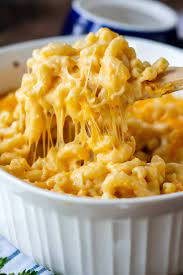

Macaroni Recipe

Description
Macaroni and cheese also called mac and cheese in Canada and the United States and macaroni cheese in the is a dish of cooked macaroni pasta and a cheese sauce, most commonly cheddar sauce.
Ingredients
- 1 8 ounce of macaroni
- 1/4 cup butter
- 1/4 cup all-purpose flour
- 1/2 teaspoon salt
- ground pepper to taste
- 2 cups of milk
- 2 cups shredded Cheddar cheese
Steps
- Boil pot of lightly salted water. Cook Macaroni in water.
- At the same time, melt butter in saucepan over medium heat.
- Add flour, salt, and pepper and stir until smooth, about 5 min.
- Pour in milk slowly, while stirring. Continue to cook until mix is smooth.
- Add cheddar cheese until melted.
- Drain macaroni and fold into cheese sauce until coated.
- Serve hot and enjoy.